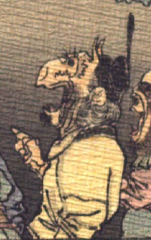

鬼。黒い冠状のものをかぶり、額から細い角を2本生やしている。目玉は黒く、鷲鼻である。口ひげ、頬ひげを生やしている。右手で前方を指差し、口を大きく開いている。黄色い衣服を着て、座っている。
著作者：J.Dautremer／出典：親書誌：U426_nichibunken_0123：Le vieillard et les démons／日付：2006／資源識別子：U426_nichibunken_0123_0004_0010
Copyright (c)2010- International Research Center for Japanese Studies, Kyoto, Japan. All rights reserved.